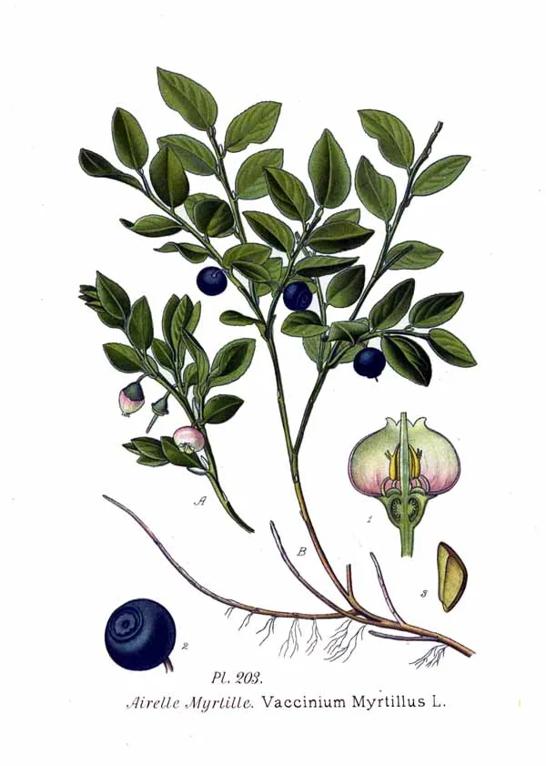
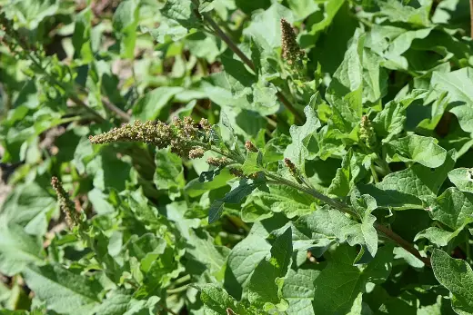

Wild food recipes from Switzerland
29 dishes made with foraged ingredients, from drinks and preserves to mains and desserts.
Drinks
 Elderflower syrup (Holunderblütensirup)Elderflower
Elderflower syrup (Holunderblütensirup)Elderflower Spruce tip syrup (Fichtenspitzensirup)Spruce tips
Spruce tip syrup (Fichtenspitzensirup)Spruce tips Linden blossom tea (Lindenblütentee)Lime blossom
Linden blossom tea (Lindenblütentee)Lime blossom Rose hip tea (Hagebuttentee)Rose hips
Rose hip tea (Hagebuttentee)Rose hips Woodruff punch (Maibowle)Sweet woodruff
Woodruff punch (Maibowle)Sweet woodruff Birch sapBirch sap
Birch sapBirch sap
Starters & snacks
 Dandelion salad (Löwenzahnsalat)Dandelion
Dandelion salad (Löwenzahnsalat)Dandelion- Elderflower fritters (Holunderküchlein)Elderflower
 Roasted chestnuts (Marroni)Sweet chestnut
Roasted chestnuts (Marroni)Sweet chestnut Wild herb salad (Wildkräutersalat)Ground elder, Chickweed, Common sorrel, Dandelion
Wild herb salad (Wildkräutersalat)Ground elder, Chickweed, Common sorrel, Dandelion Lamb's lettuce with egg (Nüsslisalat)Lamb's lettuce
Lamb's lettuce with egg (Nüsslisalat)Lamb's lettuce Chanterelle toast (Eierschwämmli-Toast)Chanterelle
Chanterelle toast (Eierschwämmli-Toast)Chanterelle
Sauces, preserves & sides
 Wild garlic pesto (Bärlauchpesto)Wild garlic
Wild garlic pesto (Bärlauchpesto)Wild garlic- Rose hip jam (Hagebuttenkonfitüre)Rose hips
 Rowan jelly (Vogelbeergelee)Rowan berries
Rowan jelly (Vogelbeergelee)Rowan berries
Bilberry jam (Heidelbeerkonfitüre)Bilberry
Main course
- Wild garlic spätzle (Bärlauchspätzli)Wild garlic
 Nettle soup (Brennnesselsuppe)Stinging nettle
Nettle soup (Brennnesselsuppe)Stinging nettle
Good King Henry with polentaGood King Henry- Chestnut gnocchi (Gnocchi di castagne)Sweet chestnut
 Porcini risotto (risotto ai funghi porcini)Porcini
Porcini risotto (risotto ai funghi porcini)Porcini Wild chive potatoes (Gschwellti)Wild chives
Wild chive potatoes (Gschwellti)Wild chives
 Elderberry soup (Holundersuppe)Elderberry
Elderberry soup (Holundersuppe)Elderberry Cornelian cherry jelly (Tierlibaum-Gelee)Cornelian cherry
Cornelian cherry jelly (Tierlibaum-Gelee)Cornelian cherry Wild strawberries with creamWild strawberry
Wild strawberries with creamWild strawberry